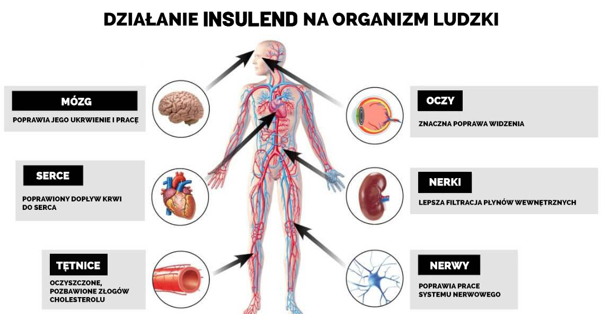
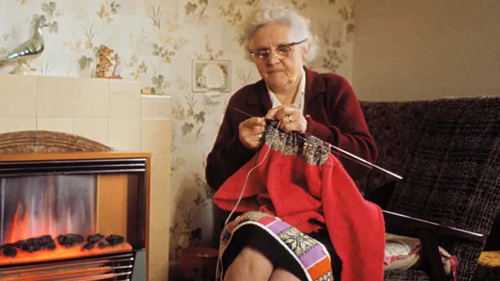

To nieporozumienie dotyczące cukrzycy może kosztować Cię życie!
Leki apteczne nie przywrócą zdrowia! Istnieje środek na cukrzycę, ale nie dla każdego.
Leon Smoktunowicz jest endokrynologiem z 38-letnim doświadczeniem w tej specjalności, doktorem nauk, profesorem, doktorem honoris causa. Dziś uważany jest za czołowego specjalistę diabetologicznego w kraju. Do dr. Smoktunowicza czeka kolejka polskich gwiazd i celebrytów cierpiących na tę chorobę.
Często przyjeżdżają do niego pacjenci z Francji, Niemiec, Wielkiej Brytanii i innych krajów. Smoktunowicz jest członkiem Europejskiego Stowarzyszenia Endokrynologów. Jest autorem ponad 20 prac naukowych dotyczących leczenia cukrzycy oraz ponad 50 publikacji w czasopismach medycznych.
Leon Smoktunowicz rzadko udziela wywiadów, ale na szczęście zgodził się odpowiedzieć na nasze pytania. Poniżej znajdziesz ważne wskazówki, które pomogą Ci walczyć z cukrzycą.
Tematy poruszane w materiale:
- Co jest najważniejsze w leczeniu cukrzycy?
- Dlaczego 95% diabetyków nie radzi sobie ze swoją chorobą?
- Kiedy jest szansa na całkowite wyleczenie cukrzycy?
- Jakie są współczesne sposoby radzenia sobie z chorobą?
MedNews: Dzień dobry! Opowiedz nam o obecnym stanie rzeczy z leczeniem cukrzycy. Czy jest wystarczająco dużo leków, które są najczęściej stosowane w celu obniżenia poziomu cukru we krwi?
Leon Smoktunowicz: Dzień dobry! Moim zdaniem cukrzyca jest najgroźniejszą chorobą. Wyjaśnię czytelnikom, co to jest na prostym przykładzie. Wyobraź sobie kandyzowane wiśnie lub kandyzowane żurawiny. To samo dzieje się z naczyniami krwionośnymi osoby z cukrzycą. Ściany naczyń krwionośnych są nasycone cukrem i stają się kruche. W rezultacie traci się elastyczność i zdolność naczyń do zwężania i rozszerzania. Najpierw umierają małe, potem średnie i duże. Naruszenie dopływu krwi prowadzi do rozwoju chorób przewlekłych.
Teraz o tym, jak leczymy cukrzycę.
Kiedy idziesz do endokrynologa z cukrzycą typu 2, przepisuje on, to co powinno być przepisane zgodnie z oficjalnymi przepisami, a nie to, co naprawdę Ci pomoże! Najprawdopodobniej przepisze Ci lekarstwo oparte na chemicznych składnikach przeciwcukrzycowych.
Ale powinieneś wiedzieć, że wszystkie te nadziewane chemią leki są niezwykle niebezpieczne: podnoszą poziom insuliny we krwi do krytycznego poziomu. Przy takiej ilości insuliny krew staje się gęsta jak mleko skondensowane. Insulina ma podobną konsystencję i działanie do kwasu żołądkowego. Wyobraź sobie, co by się stało, gdyby kwas żołądkowy wypełnił twoje narządy wewnętrzne. Po prostu je spali!
Tak wysokie stężenie insuliny niszczy komórki i przyczynia się do ich nietypowego podziału. A to oznacza zmiany onkologiczne! Z tego powodu, według statystyk, RAK ROZWIJA się u 38% diabetyków.
Ale to nie wszystko! W wyniku stosowania tych środków na ściankach naczyń krwionośnych tworzą się blaszki cholesterolowe. Przy wysokim ciśnieniu krwi blaszki cholesterolowe tworzą skrzepy krwi, które mogą się oderwać, a następnie przedostać do tętnicy płucnej przez krwioobieg. To może prowadzić do choroby zakrzepowo-zatorowej - a to śmierć w ciągu 10-15 minut. A wysokie ciśnienie krwi występuje u 98% diabetyków.
Tragiczne konsekwencje zaniedbania lub niewłaściwego leczenia cukrzycy, które cały czas obserwujemy w praktyce lekarskiej:
1. Ślepota
W 80% przypadków choroba prowadzi do całkowitej ślepoty. Oderwanie siatkówki uniemożliwia przywrócenie widzenia. Tu nie pomoże ani operacja, ani korekcja laserowa. Najczęściej człowiek staje się bezradny i całkowicie zależny od innych.
2. Zniszczenie stawów
Płyn stawowy zapewnia ruchomość stawów. Kiedy naczynia są zniszczone i przestają odżywiać staw, nie wytwarza się mazi stawowej. Następuje zniszczenie tkanek. Pacjent odczuwa niesamowity ból, nie pomagają nawet silne środki przeciwbólowe. Staw jest całkowicie zniszczony. Osoba traci zdolność samodzielnego poruszania się.
3. Niewydolność nerek
Innym powszechnym powikłaniem cukrzycy jest przewlekła niewydolność nerek. Z biegiem czasu nerki po prostu przestają działać i konieczny jest pilny przeszczep, aby uniknąć śmierci.
4. Umieranie kory mózgowej
Mózg, podobnie jak wiele innych narządów, cierpi na nadmiar cukru. Często z biegiem czasu część kory mózgowej obumiera w cukrzycy i rozwijają się nieodwracalne zaburzenia psychiczne: człowiek przestaje rozpoznawać krewnych, nie może wykonywać elementarnych czynności i dbać o siebie.
5. Amputacja kończyn dolnych
Cukrzyca prowokuje gangrenę. Kończyny stają się czarne, pojawia się nieprzyjemny zapach. Wszystko kończy się amputacją.
Najbardziej paradoksalne jest to, że wymienione przeze mnie komplikacje wyprzedzają ludzi, którzy posłusznie przyjmują wszystkie przepisane środki. I pojawia się pytanie: co to za leczenie, jeśli nie ma w tym sensu?! Ludzie wydają na apteki dużo pieniędzy, przez co są pozbawieni nie tylko ich, ale i zdrowia.
MedNews: Ale jeśli lek o składzie chemicznym jest tak niebezpieczny, dlaczego ministerstwa i państwo nie podejmują działań i nie zakazują ich produkcji, a lekarze nadal przepisują ludziom?
L. Smoktunowicz: Niestety dzisiaj jest niewielu lekarzy, którzy troszczą się o pacjentów i dbają o ich zdrowie. Wykonują swoją pracę i dostają za nią zapłatę. Dla nich tak naprawdę nie ma znaczenia, co dzieje się z pacjentem, co czuje, jak cierpi i jakim życiem żyje. Głównym powodem jest to, że sprzedaż tych środków przynosi dobry zysk, a lekarze współpracują z przedstawicielami medycznymi firm farmaceutycznych. Taki jest biznes.
Najgorsze jest to, że pacjenci nie wiedzą, jak niebezpieczne jest takie leczenie. Nie są świadomi konsekwencji.
Leczenie cukrzycy w XXI wieku ostrymi chemikaliami to niesamowita głupota! Co więcej, uważam, że to prawdziwa zbrodnia! Ale wiem, że cukrzycę typu 2 można wyleczyć! Najważniejsze jest, aby wybrać odpowiednią terapię.
MedNews: Jak zatem leczyć cukrzycę? Weźmy na przykład przeciętnego seniora, u którego z wiekiem rozwija się cukrzyca. Ma wysoką zawartość cukru i rośnie. Powiedzmy, że przepisano mu chemikalia, które są szkodliwe, jak teraz wiemy. Co może zrobić, aby leczyć cukrzycę? Czy będzie w stanie sobie pomóc, jeśli nie ma nadziei dla lekarzy?
L. Smoktunowicz: Powtarzam, że cukrzyca typu 2 jest chorobą złożoną, niebezpieczną i ogólnoustrojową. To nie jest SARS i nie biegunka. To wymaga poważnego podejścia. Leczenie cukrzycy powinno być kompleksowe i tylko tymi środkami, które nie tylko obniżają poziom cukru, ale też nie szkodzą narządom i układom wewnętrznym.
Jeśli chcesz poznać konkretne sposoby, dzięki którym ludzie mogą samodzielnie pozbyć się cukrzycy, to polecam . Jest to narzędzie nowej generacji, zostało opracowane przez Instytut Badawczy Endokrynologii w 2021 roku. To nie chemia, ale absolutnie naturalny produkt. Zawiera najsilniejsze naturalne substancje, które przywracają cukier do normy.
Ten środek naturalnie przywraca funkcję trzustki i pomaga obniżyć poziom cukru we krwi bez uszkadzania narządów.
to wyjątkowy owoc rozwoju endokrynologów!
Ostatnie badania z zakresu endokrynologii wykazały, że główną przyczyną insulinooporności jest przesycenie organizmu substancjami rakotwórczymi, tłuszczami trans i innymi szkodliwymi substancjami, które składają się na większość produktów sklepowych. Gromadzą się w organizmie, „zatykają” komórki i zmniejszają ich wrażliwość na insulinę. Tak zaczyna się rozwój cukrzycy.
- Obniża poziom cukru we krwi oczyszczając komórki i zwiększając ich wrażliwość na insulinę, poprawia i utrzymuje metabolizm glukozy.
- Normalizuje pracę trzustki, przywraca normalną produkcję insuliny.
- Nasyca organizm użytecznymi naturalnymi składnikami, witaminami i minerałami, które razem normalizują procesy wewnętrzne i przywracają im naturalną równowagę.
Skuteczność została udowodniona klinicznie! Po tym, jak zaczęliśmy polecać ten środek naszym pacjentom, wskaźnik powrotu do zdrowia - mam na myśli CAŁKOWITĄ REDUKCJĘ CUKRZYCY - wzrósł do 97%! Oznacza to, że 97 na 100 osób zapomniało o swojej chorobie. Ich cukier wrócił do normy i mają się świetnie!
List od mojej pacjentki z cukrzycą
Tamara Fedorowicz przez wiele lat chorowała na cukrzycę. Ponieważ mieszka daleko na odludziu, nie mogła przyjść do mnie do gabinetu. Konsultowałem się z nią telefonicznie. Poleciłem Tamarze Fedorowicz i jak widzimy, udało jej się przywrócić normalny poziom cukru i teraz czuje się zdrową osobą. Możesz sam przeczytać jej list.
Tamara Fedorowicz ma 75 lat. Emerytowana kobieta z cukrzycą. Mieszka we wsi pod Krakowem.
„Zachorowałam na cukrzycę w wieku 50 lat. Potem pojawiły się komplikacje w oczach i nerkach. Pojawiły się owrzodzenia nóg. Szczerze przygotowałam się na najgorsze. Lekarze przepisali mi leki, ale przyprawiały mnie o zawroty głowy i nie mogłam nawet sama wstać!
Żyłam długo, ale nadal nie chciałam umrzeć. Jesteś moją ostatnią nadzieją jako lekarz. Przeczytałam wszystkie Twoje książki, a moja wnuczka stale odwiedzała Twoją stronę. Widziałam przykłady ludzi, którzy wyleczyli cukrzycę, ale nadal nie do końca w to uwierzyli. Bardzo chciałabym Cię zobaczyć, ale mieszkam daleko od Warszawy, nie mam pieniędzy i energii, żeby się tam dostać. Ale jakoś widziałam Cię w telewizji i podałeś swój numer do konsultacji. Zebrałam się na odwagę i postanowiłam do Ciebie zadzwonić.
Bardzo dziękuję za rady i za . Od tego czasu minął rok, a ja nadal żyję, a ponadto czuję się świetnie! Mój cukier wrócił do normy. Przez ostatnie 10 lat nie czułam się tak zdrowa i pełna wigoru jak teraz! Ciągła suchość w ustach i pragnienie zniknęły, nie męczę się jak wcześniej, rzadziej biegam do toalety. Ciśnienie również przestało skakać, zawsze w normalnych granicach. Zaczęłam nawet widzieć lepiej. Dziękuję bardzo i wszystkiego najlepszego!”
MedNews: Proszę opowiedzieć nam bardziej szczegółowo, jak działa ?
L. Smoktunowicz: przywraca pracę trzustki w ciągu 1 miesiąca. Produkt jest bezpieczny, ponieważ ma naturalny skład, dzięki czemu może być stosowany przez osoby starsze i osoby z chorobami przewlekłymi.
Produkt zawiera silne naturalne składniki:
- Morwa biała
- Cynk
- Chrom
W wyniku jego pracy w organizmie zachodzą następujące zmiany:
1. Poziom glukozy we krwi jest znormalizowany
nie podnosi poziomu insuliny, dlatego jest nieszkodliwy. Narzędzie ma bardzo ważne działanie – zmniejsza insulinooporność. Składniki biologicznie czynne wnikają bezpośrednio do komórek mięśniowych, tłuszczowych i wątrobowych i stymulują je, aby zaczęły lepiej reagować na obecność hormonu we krwi.
W medycynie proces ten nazywa się „tworzeniem komórek wtórnych”. Z biegiem czasu komórki zaczynają zużywać bardziej aktywną glukozę, co prowadzi do spadku jej stężenia we krwi. Pacjenci natychmiast to zauważają. Nie ma już rozdzierającego pragnienia, znikają wysypki skórne, przywracają oddawanie moczu. Obniża się poziom hemoglobiny glikowanej, zmniejsza się stężenie cukru i acetonu w moczu.
2. Cukier jest usunięty z krwi
Głównym działaniem jest to, że nie tylko usuwa cukier z krwi, ale także normalizuje poziom glukozy. Zakrzepy krwi pękają, naczynia krwionośne są oczyszczane. Przywracane są małe naczynia włosowate. W efekcie normalizuje się ciśnienie krwi, znika osłabienie, senność, poprawia się gojenie ran i skaleczeń.
3. Od czasu do czasu możesz sobie pozwolić na przysmaki
Pomimo tego, że przy cukrzycy konieczne jest monitorowanie diety, po kursie z będziesz mógł od czasu do czasu delektować się ulubionymi potrawami - bez obaw o swój stan i poziom cukru. Zapamiętasz smak tych potraw, których przez tak długi czas byłaś zmuszony unikać. Ale radzę nie przesadzać, szczególnie w pierwszych miesiącach po kursie, aby wiarygodnie skonsolidować wynik.
4. Wzrok się poprawia
Stopniowo wzrok zacznie się regenerować. Aktywne składniki pomagają poprawić odżywienie soczewki i chronią przed związanymi z wiekiem zmianami w tkankach oka. Nigdy więcej ślepoty!
5. Odchudzanie
98% osób z cukrzycą typu 2 ma nadwagę. Dlatego jednym z działań jest zmniejszenie masy ciała. Dzieje się tak z dwóch powodów. Przy utracie wagi 10 kg ryzyko groźnych następstw cukrzycy zmniejsza się o prawie 50%. Oprócz środka zaradczego istnieją specjalistyczne zalecenia dotyczące żywienia cukrzycy i zalecanych wyborów dotyczących stylu życia.
6. Wyraźnie poprawia się stan skóry, kości i mięśni
Ze względu na normalizację procesów metabolicznych w stanie skóry zachodzą pozytywne zmiany w wyniku przyjmowania . Wrzody goją się i przestają ropieć. Skład tkanek zostaje przywrócony, kości nie są już kruche. Regeneracja następuje we wszystkich tkankach, mięśnie stają się elastyczne.
7. Energia powraca
Budzisz się rano i łatwo wstajesz z łóżka. W ciągu dnia jesteś wesoły i pełen energii. Uczucie zmęczenia już ci nie przeszkadza.
8. Komfort psychiczny
Zapomnisz o bólu głowy, nie musisz martwić się o swoje zdrowie i stale doświadczać strachu przed śmiercią. Uzależnienie od glukometru odchodzi i żyjesz pełnią życia zdrowego człowieka.
9. Poprawia męską potencję
Cukrzyca pozbawia mężczyznę normalnego życia seksualnego. Pozytywnym dodatkowym wpływem na organizm środka jest przywrócenie potencji. Poziom testosteronu zostaje znormalizowany, a erekcja staje się regularna i trwała.
A co najważniejsze, możesz przedłużyć swoje życie! Nawet na starość poczujesz się zdrowy i pełen wigoru. Twoi bliscy nie będą musieli o Ciebie dbać, Ty zadbasz o siebie sam.
MedNews: Ale o ile wiemy, nie można kupić w aptece. I w zasadzie trudno to zdobyć. Co powinni zrobić diabetycy?
L. Smoktunowicz: jest produkowany w niewielkich, ograniczonych ilościach i dlatego nie trafia do aptek. Większość z nich jest niestety eksportowana, część kupują prywatne kliniki. Jak możesz sobie wyobrazić, koszt produktu nie jest mały. Zagraniczne kliniki są gotowe zapłacić za opakowanie tysiące euro, bo Europejczycy za każde pieniądze zgarną .
Jak mówią, jest zbawienie, ale nie dla wszystkich...
Ale jest też dobra wiadomość. W ramach programu „Polska bez cukrzycy” wspólnie z producentem rozdajemy rabaty, które dochodzą aż do 50%.
Jak zdobyć w programie preferencyjnym?
Każdy mieszkaniec Polski może teraz zakupić z rabatem, który wyświetla się poniżej. Aby to zrobić, wystarczy, że wypełnisz formularz kontaktowy! Ostrzegamy, że czas promocji jest ograniczony!
Teraz popyt na produkt jest niespotykanie wysoki. Z tego powodu producent został zmuszony do wyznaczenia limitów czasowych na promocję. Możesz zakupić z rabatem do włącznie. Pośpiesz się!
KOMENTARZE: